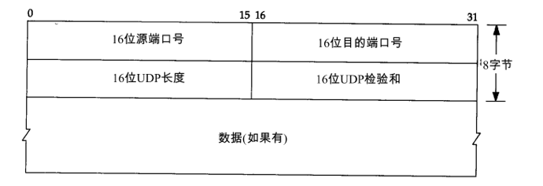

TCP
TCP功能
TCP是面向连接的协议，为用户进程提供可靠的全双工字节流。通过这种方式，可以确保可靠有序的数据包，并且可以支持流量控制。下面从以下几个方面开始解释TCP应该实现上述操作的原因：
1、IP网络层为什么不能保证数据包的可靠性
2、TCP确保可达和有序数据包的方式
3、TCP支持流量控制的方式
4、TCP状态和应用程序
OSI网络模型
在OSI网络模型中，TCP位于传输层，这确保了协议的可靠性和连续性。具体的发送和接收数据包由底层链路层和物理层决定，因此TCP的工作也基于底层优化和改进。
| Layers is OSI | Function | TCP/IP protocol family |
|---|---|---|
| Application Layer 应用层 | File transmission, email, file service and virtual terminal 文件传输、邮件、文件服务、虚拟终端 | TFTP, HTTP, SNMP, FTP, SMTP, DNS, Telnet |
| Presentation Layer 表示层 | Data formatting, code coversion, and data encryption 数据格式化、代码转换、数据加密 | No potocol |
| Session Layer 会话层 | Releases or establishes connection with other interface 建立或解除连接 | No potocol |
| Transport Layer 传输层 | Provides end-to-end interfaces 提供端到端的连接 | TCP, UDP |
| Network Layer 网络层 | Selects a router for a data packet 为数据包选择路由 | IP, ICMP, RIP, OSPF, BGP, IGMP |
| Data Link Layer 数据链路层 | Transmits frames with addresses and detects errors 传输有地址的帧及错误检测 | SLIP, CSLIP, PPP, ARP, RARP, MTU |
| Physical Layer 物理层 | Transmits data on physical media in the form of binary data 以二进制数据形式在物理媒体上传输数据 | ISO2110, IEEE908, IEEE802.2 |
客户端和服务器之间的通信使用应用层协议，传输层的通信使用TCP，而TCP使用较低层IP，IP使用某种形式的数据链路层进行通信。
网络中的数据最终通过多个路由器连接传输。
底层以太网协议规定了电子信号如何形成数据包，解决了局域网（LAN）的点对点通信问题，但无法解决多个局域网的互通问题。（通过MAC地址寻址）
网络层使用的IP协议定义了一组自己的地址规则，主要解决寻址和路由问题，找到根据对方IP地址传输信息的最佳路径。LAN通过路由器连接，路由器根据IP协议指示数据包转发到某个路由接口。但是，IP协议并不能保证数据包的到达和完整性，特别是当网络拥塞时，一些数据包将被丢弃以确保数据传输效率。为了确保数据包的完整性、有序性和可靠性，这就是TCP即将要做的事情。
分层设计，每层都负责自己的事情。物理层保证二进制的数据包能够在物理媒体上传输，数据链路层保证了传输到局域网内部后传输到某个MAC地址上，网络层负责找到某个IP，传输层保证找到某个端口，应用层具体使用数据。
数据包的组成
每下层传输都加上下一层的头。tcp层加的是端口号，ip层加的是ip地址，数据链路层加的是MAC地址。
以太网帧格式
以太网头（Ethernet Header）总共14个字节，其中主要包含了目的MAC地址和源MAC地址。
IP报文格式
普通的IP首部长为20个字节，除非含有选项字段。
4位版本：目前协议版本号是4，因此IP有时也称作IPV4。
4位首部长度：首部长度指的是首部占32bit字的数目，包括任何选项。由于它是一个4比特字段，因此首部长度最长为60个字节。
16位总长度：总长度字段是指整个IP数据报的长度，以字节为单位。利用首部长度和总长度字段，就可以知道IP数据报中数据内容的起始位置和长度。由于该字段长16bit，所以IP数据报最长可达65535字节。当数据报被分片时，该字段的值也随着变化。
IP头总共20个字节。主要包含了4个字节的源IP地址和4个字节的目标IP地址。4个字节只能表示ipv4，存放ipv6需要16个字节。所以ipv6的报文头和ipv4的报文头肯定不一样。
TCP报文格式
如果不计任选字段，TCP头部通常是20个字节。主要包括源端口和目的端口，端口是用16位（2字节）标示的，最大65535。
UDP报文格式

UDP头部是8个字节，主要包括的是源端口和目的端口。
确保可靠性
底层路由器在转发时不能确保数据包的可靠性和有序性。首先，为了确保数据包的完整性，TCP在传输时对数据进行分片。其次，增加了SEQ和ACK，采用超时重传机制，保证了数据包的可靠性。
SEQ（Sequence，序号）
TCP将每个字节的数据都进行了编号，这就是序列号。注意，是对每个字节进行编号。
序列号的作用：
- a、保证可靠性（当接收到的数据总少了某个序号的数据时，能马上知道）
- b、保证数据的按序到达
- c、提高效率，可实现多次发送，一次确认
- d、去除重复数据
数据传输过程中的确认应答处理、重发控制以及重复控制等功能都可以通过序列号来实现
ACK（Acknowledge，确认）
TCP通过确认应答机制实现可靠的数据传输。在TCP的首部中有一个标志位——ACK，此标志位表示确认号是否有效。接收方对于按序到达的数据会进行确认，当标志位ACK=1时确认首部的确认字段有效。进行确认时，确认字段值表示这个值之前的数据都已经按序到达了。而发送方如果收到了已发送的数据的确认报文，则继续传输下一部分数据；而如果等待了一定时间还没有收到确认报文就会启动重传机制。
超时重传
如果发送方在一段时间内没有收到数据包的ACK，则可以确定该数据包在网络中丢失并且数据包被自动重传。这种机制称为超时重传。
第一种情况：数据包丢失。当数据发出后在一定的时间内未收到接收方的确认，发送方就会进行重传（通常是在发出报文段后设定一个特定的时间间隔，到点了还没有收到应答则进行重传）。
第二种情况：确认包丢失。当接收方收到重复数据（通过序列号进行识别）的时就将其丢弃，重新发送ACK。
重传时间的确定：报文段发出到确认中间有一个报文段的往返时间RTT（Round-Trip Time，往返延时），显然超时重传时间RTO（Retransmission TimeOut，重传超时时间）会略大于这个RTT，TCP会根据网络情况动态的计算RTT，即RTO是不断变化的。在Linux中，超时以500ms为单位进行控制，每次判定超时重发的超时时间都是500ms的整数倍。其规律为：如果重发一次仍得不到应答，就等待2*500ms后再进行重传，如果仍然得不到应答就等待4*500ms后重传，依次类推，以指数形式递增，重传次数累计到一定次数后，TCP认为网络或对端主机出现异常，就会强行关闭连接。
三次握手

客户端主动连接，服务端被动连接。
第一次握手：建立连接时，客户端发送syn包（syn=x）到服务器，并进入SYN_SENT状态，等待服务器确认；SYN：同步序列编号（Synchronize Sequence Numbers）。
第二次握手：服务器收到syn包，必须确认客户的SYN（ack=x+1），同时自己也发送一个SYN包（syn=y），即SYN+ACK包，此时服务器进入SYN_RECV状态；
第三次握手：客户端收到服务器的SYN+ACK包，向服务器发送确认包ACK(ack=y+1)，此包发送完毕，客户端和服务器进入ESTABLISHED（TCP连接成功）状态，完成三次握手。
四次挥手
1、客户端进程发出连接释放报文，并且停止发送数据。释放数据报文首部，FIN=1，其序列号为seq=u（等于前面已经传送过来的数据的最后一个字节的序号加1），此时，客户端进入FIN-WAIT-1（终止等待1）状态。 TCP规定，FIN报文段即使不携带数据，也要消耗一个序号。
2、服务器收到连接释放报文，发出确认报文，ACK=1，ack=u+1，并且带上自己的序列号seq=v，此时，服务端就进入了CLOSE-WAIT（关闭等待）状态。TCP服务器通知高层的应用进程，客户端向服务器的方向就释放了，这时候处于半关闭状态，即客户端已经没有数据要发送了，但是服务器若发送数据，客户端依然要接受。这个状态还要持续一段时间，也就是整个CLOSE-WAIT状态持续的时间。
3、客户端收到服务器的确认请求后，此时，客户端就进入FIN-WAIT-2（终止等待2）状态，等待服务器发送连接释放报文（在这之前还需要接受服务器发送的最后的数据）。
4、服务器将最后的数据发送完毕后，就向客户端发送连接释放报文，FIN=1，ack=u+1，由于在半关闭状态，服务器很可能又发送了一些数据，假定此时的序列号为seq=w，此时，服务器就进入了LAST-ACK（最后确认）状态，等待客户端的确认。
5、客户端收到服务器的连接释放报文后，必须发出确认，ACK=1，ack=w+1，而自己的序列号是seq=u+1，此时，客户端就进入了TIME-WAIT（时间等待）状态。注意此时TCP连接还没有释放，必须经过2∗∗MSL（最长报文段寿命）的时间后，当客户端撤销相应的TCB后，才进入CLOSED状态。
6、服务器只要收到了客户端发出的确认，立即进入CLOSED状态。同样，撤销TCB后，就结束了这次的TCP连接。可以看到，服务器结束TCP连接的时间要比客户端早一些。
交通管制
从上面我们知道TCP可以确保数据的可靠性，但它也必须考虑效率。需要考虑以下三个方面：
支持批量传输数据包支持基于网络条件的拥塞控制能够理解接收器的状态以防止接收器被淹没基于上述三个要求，采取了以下措施。
滑动窗口
如果TCP数据包逐个传输和确认，则效率太低。尽管确保了可靠性，但是不能确保一次发送和确认一个分组的效率。在这种情况下，需要批量发送和确认方法，这是滑动窗口所做的。
滑动发送窗口：
在发送窗口中，从左到右，此窗口之前的数据必须是接收方已发送和确认的数据，而发送窗口内的数据是发送方可以发送的数据，以及之后的数据发送窗口是无法传输的数据。
如果超时或丢失，建议采用两种解决方案：
去回-N。丢失具有丢失包的SEQ之后的SEQ的所有包选择ARQ仅传输丢失的数据包，避免重复（效率高，可以防止发送重复的数据包）滑动窗口还具有让发送者知道接收器的处理状态的功能。假设TCP接收器的缓存已满并且无法处理更多数据，但发件人不知道它。在这种情况下，发送方将不再发送任何数据，只要每次发送分组时发送方被告知当前滑动窗口的大小。
接收器在接收数据后立即发送ACK，但同时向发送器声明窗口大小为0.这样，发送器暂时不会发送数据。当数据包到达时，不会立即发送ACK，直到缓存中有足够的空间。这可以防止发件人滑动窗口。但是，也存在问题。接收器发送ACK的延迟不应超过超时时间。如果太长，发送方可能会错误地认为数据丢失并重新传输数据。拥塞控制
我们知道网络状况不稳定。在良好的情况下，可以传输更多的数据包。在不好的情况下，如果传输数据包的速率保持不变，不仅会增加网络负担，还会导致过多的数据包丢失，从而导致更多的超时重传，这无疑会降低通信效率。
基于此，两个TCP通信方保持称为拥塞窗口（cwnd，congesion window）的值，这取决于网络中的拥塞率，并且发送方的Send窗口的值等于拥塞窗口的大小。如果网络中没有发生拥塞，则可以增加拥塞窗口值，以便发送方可以向网络发送更多数据。否则，减少拥塞窗口值以避免增加网络的拥塞率。
TCP目前有以下四种主要的拥塞控制算法：
开始慢拥塞避免快速重传快速恢复没有介绍具体的算法实现。粗略实现的功能是基于当前网络条件找到适当的传输速率以防止网络过载。例如，慢启动意味着开始时传输速度较慢，然后根据数据包丢失调整速率。如果没有丢包，则加速传输速度。如果发生丢包，则传输速度降低。
TCP状态
所有TCP用户都知道，当TCP建立连接时会发生三次握手，并且在断开连接时会发生四次握手。那么状态如何呢？

上面的数字并不太难以记住。让我们看一下下图，将其排序并查看具体的应用程序状态。
如上所示，成功建立连接后，状态为ESTABLISHED。当接收者的状态是SYN-RECV时，它表示接收者已经回复了第二次握手消息，并且正在等待发送者再次确认。如果网络遭受大量SYN攻击，则存在大量SYN_RECV状态。在这种情况下，您可以找到这些IP地址并使用防火墙过滤来解决大量错误连接问题。
丢失连接 - TIME_WAIT
在网络中，一方被主动关闭但未被四方握手关闭。TCP建立的渠道仍然存在吗？关闭多久？此时的TCP状态为TIME_WAIT。可以想象，这种情况经常发生在现实中。大多数封闭连接是主动关闭而不是通过握手通信。如果此时关闭，是否可以重新连接先前的TCP通道？还是需要重新创建？
对于任何TCP实现，必须选择MSL的值。默认值为2分钟或30秒。TIME_WAIT的默认值是MSL的2倍，持续时间介于1到4分钟之间。MSL是IP数据包在网络中生存的最长时间。
存在TIME_WAIT的两个原因：1。终止可靠的TCP全双工连接2.允许旧的重复数据包在网络中消失
TCP必须防止在连接终止之后再现连接的旧重复分组，并且被误解为相同连接的实施例。如果TIME_WAIT足够长，这是MSL的两倍，则允许在某个方向上的数据包在被丢弃之前最多存活一段MSL就足够了。
从TIME_WAIT状态到CLOSED状态，存在超时设置，即2 * MSL（RFC793将MSL定义为2分钟，Linux定义为30秒）。如果时间超过此限制，则将当前TCP通道定义为已关闭。